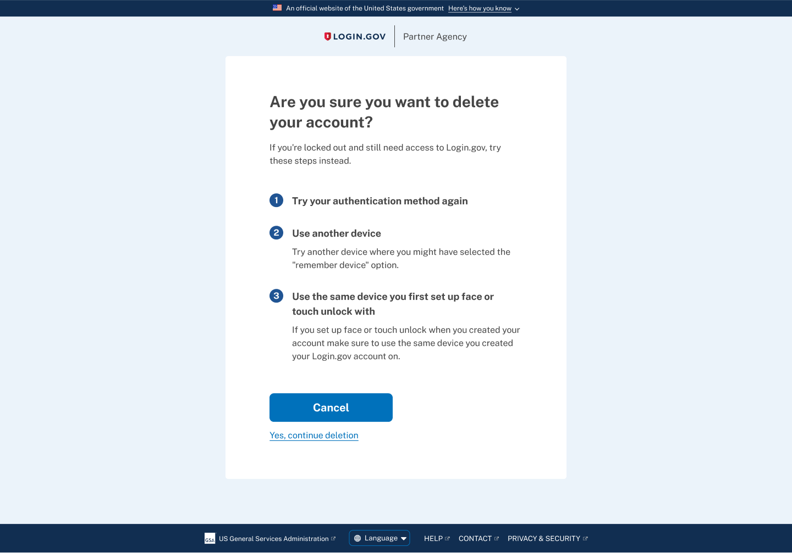
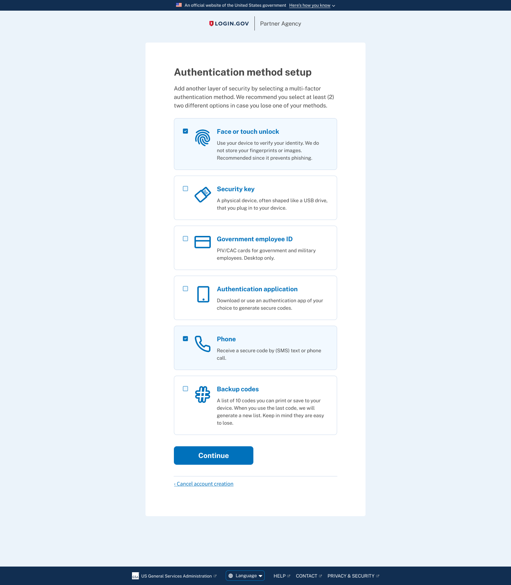
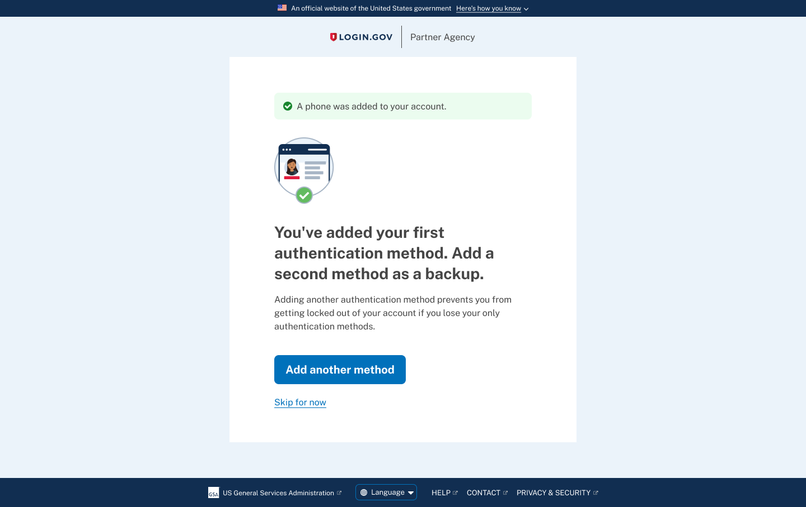

Login.gov
Product • UX Research • Content Design
Increasing account security by encouraging users to setup multiple authentication methods
Following updates to the design of the authentication selection screen, Team Katherine's next task was to enable and encourage users to select multiple authentication methods when creating an account.
In November 2021, Login.gov only let users to set up only one Multi-Factor Authentication (MFA) method from the MFA Selection screen when first creating an account.
The Challenge
Since the current functionality limits users to only setting up one authentication method at account creation, many users don't realize they can add multiple MFA methods from their account page.
Having only one MFA method increases their chances of being locked out and having to delete their account before creating a new one.

Goals & Questions
We looked to determine if enabling and encouraging users to create 2 MFA methods when first creating an account would:
-
Decrease the number of account lockouts / invoke the account recovery process
-
Decrease the number of Login.gov support tickets
-
Have users add a second method if it was strongly encouraged by the content
The research questions we'd like to answer:
-
How effective is the text content in convincing users to add a second MFA method on the first MFA selection screen?
-
How often will users only select one MFA method?
-
If users only select one MFA method will they add a 2nd method if they are prompted to later on in the account creation flow?
-
How many users will forgo adding a 2nd method even when given another chance to add another MFA method?
Methodology
The team conducted 12 unmoderated usability tests via UserTesting.com.
We used a developer sandbox site instead of a prototype to get a better understanding of how people would actually move through the account creation and MFA selection process.
Enable MFA Multi-select
Our first move was to switch the radio button to a checkbox. This minor change subtly indicates to users they can select more than one MFA method tile.
We then added "We recommend you select at least (2) two different options in case you lose one of your methods"

MFA Interstitial Upsell Page
In order to capture users who only selected one MFA method, we decided to add an interstitial "upsell" page after a user successfully sets up their first authentication method.
We explain to them that adding another authentication method would prevent them from being locked out from their account in case they lose one of their methods.

User Flow
The video below illustrates the interstitial upsell screen popping up if a user only selects one MFA method. The primary call to action "Add another method" takes the user back to the authentication selection page to add another method.
Research Results
All participants chose Phone/SMS as an MFA method. Of those participants:
10 of 12 participants set up Phone/SMS as their first, primary MFA method.
-
"I would typically use my phone. So I'll choose the phone."
-
“I ended up using SMS because that's the easiest for me. I don't know about the codes or the keys. So yeah I would just pick the ‘Send me a text’ thing...”
7 of 12 participants who selected and set up Phone/SMS ended up with that as their only MFA method.
-
“Let's just go with a simple one with our phone number, and we'll only do one of those [MFA methods].”
7 of 12 of participants selected 2 MFA methods on the first selection screen. Of those users:
-
3 of 12 participants selected 2 MFA methods (Phone and Backup codes) on the first selection screen and set them both up successfully.
-
"I selected more than one cause that's what the government recommended and also you can't be too safe. It's nice to have just in case your phone is broken, you can have the backup codes written down."
-
4 of 12 participants selected 2 MFA methods on the first selection screen but only set up 1 MFA method, by either skipping or failing to set up the 2nd MFA method.
-
“I wanted to do two but then I didn't choose the codes since they were not very safe. If I were to do it again I would pick a second one and would add the authentication app.”
5 of 12 participants selected only 1 MFA method on the first selection screen. Of those users:
-
3 of 12 selected only 1 MFA method (Phone/SMS) and opted to skip setting up a 2nd MFA when prompted/encouraged to.
-
“I did not select more than one cause that would drive me crazy! I'm more concerned about forgetting all my passwords than security as much as I probably shouldn't.”
-
"I believe I will skip for now because it [the UserTesting prompt] does not say to do that. I do think this is a good option to have right here too. Cause I'm already in the process of adding extra security features. Doing it while I'm already in the process is a good thing because I can do it later but I'll probably forget about it.”
Outcomes & Impacts
(Validating impact and results with project managers – STAY TUNED)
Additional efforts included notifying existing users that they should add another authentication method after signing in. We also created an email to remind users that they should add an additional MFA method if they only had one.